수학여행에서 가장 중요한건 "안전"입니다.
길고 읽기 싫겠지만 주의사항의 숙지를 통해 안전하고 행복한 수학여행이 되면 좋겠습니다 ~
1. 시간을 엄수하여 집합합시다.
2. 세면도구와 필기용구를 준비한다.
3. 출발 전날 충분한 수면을 취한다.
4. 간편복과 우천을 대비해 우산(우의)를 준비한다.
5. 불필요한 물건 지참하지 않는다(주류, 담배류, 귀중품 등)
6. 필요 이상의 현금을 소지하지 않는다.
7. 자신에 맞는 간단한 의약품을 준비한다(멀미약, 소화제 등)
8. 안전사고에 특히 유의한다.
1. 여권 만료기간, 단수 or 복수 여권인지 확인한다.
2. 충격을 보호할 수 있는 단단한 가방, 케이스 준비 및 도난 방지를 위한 잠금 장치있는 가방을 준비한다.
3. 호텔에 기본 세면도구가 있으나 개별적으로 준비한다.
4. 진통제, 소화제, 멀미약 등 개인 상비약을 준비한다.
5. 기타 썬크림, 선글라스, 모자, 우산(우의), 필기도구를 준비한다.
1. 지정된 좌석에 앉고, 안전띠를 반드시 착용한다.
2. 버스 내의 기물을 훼손하지 않으며, 질서를 문란하게 하는 행동은 삼가한다.
3. 승하차 시 질서를 지키며 하자 시에는 반드시 버스의 위치와 차량번호를 확인한다.
4. 승차가 완료되면 차량 책임 학생(반장)은 이상 유무를 알린다.
1. 인원이 많고 복잡한 장소이니 개인행동은 삼가한다.
2. 수속 및 탑승 시 한 줄로 질서를 지킨다.
3. 승무원의 주의사항에 유의한다.
4. 소란을 피우거나 지정된 장소 이외에는 가지 않는다.
5. 기물에 손대거나 훼손하는 일이 없도록 한다.
6. 바닥에 휴지 및 오물을 버리지 않는다.
7. 안전사고에 특히 유의한다.
1. 안내인의 말씀을 잘 듣고 행동하며 전시물에 손을 대지 않는다.
2. 위험한 곳에 절대로 접근하지 않는다.
3. 출입 금지 구역에 접근하지 않고, 쓰레기를 함부로 버리지 않는다.
4. 일정을 항상 숙지하여 시간을 정확히 지키고 개인행동이 필요한 경우 선생님의 허락을 받는다.
5. 관광객을 희롱하거나 관광객과 다투지 않으며 항상 질서와 예의를 지킨다.
6. 힘든 친구를 도와주고 이상이 있을 때 즉시 담임선생님께 알린다.
7. 기념품 구입은 허가된 시간에만 하되 과다한 구입을 삼간다.
8. 기록을 통해 감상문 또는 보고서 작성에 참고하고 의미 있는 현장체험 학습이 되도록 노력한다.
9. 사람과 차량이 많아 대열에서 벗어나는 일이 없어야 한다.
10. 비상 연락처를 숙지하여 일행과 떨어졌을 때 연락할 수 있도록 하고, 일행과 떨어지면 제자리에서 기다립니다.
1. 실내에서는 정숙을 유지하고 과격한 행동을 하지 않는다.
2. 화장실을 청결하게 사용하고 절전, 절수한다.
3. 시설물 및 비품을 깨긋이 사용하고, 낙서 및 훼손하는 일이 없도록 한다.
4. 소지품을 잘 간수한다.(귀중품은 담임선생님께 보관)
5. 현관문은 자동으로 잠기므로, 외출 시 방 카드키는 꼭 챙겨야 됩니다.
6. 선생님의 허락 없이 외출하지 않는다.
7. 숙소 위치를 알아두고 전화번호를 메모하여 휴대한다.
8. 대신인의 긍지를 살려 학생 신분에 어긋나는 행위를 하지 않고 즐겁고 보람찬 체험 학습이 되도록 서로 노력한다.
1. 참가 학생 전원이 감상문 또는 보고서를 쓰도록 지도하고 우수작은 표창한다.
2. 가능한 한 빠른 시일 안에 현장체험 학습의 들뜬 기분을 가라안히고 학업에 전념할 수 있도록 지도한다.
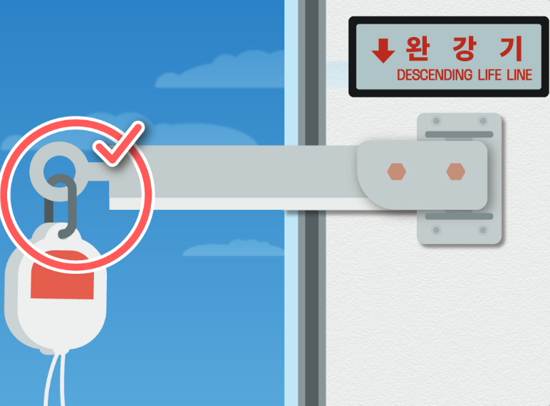
1. 지지대 고리에 완강기 고리를 걸고 잠그기
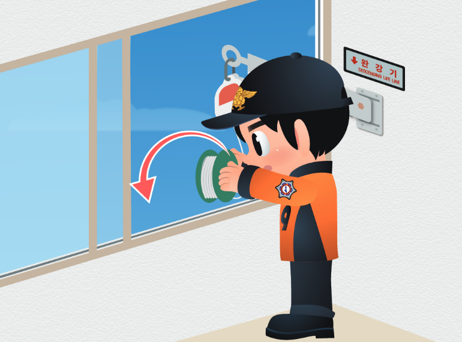
2. 지지대를 창밖으로 밀고 밑에 사람이 있는지 확인 후 줄을 아래 바닥으로 떨어뜨리기
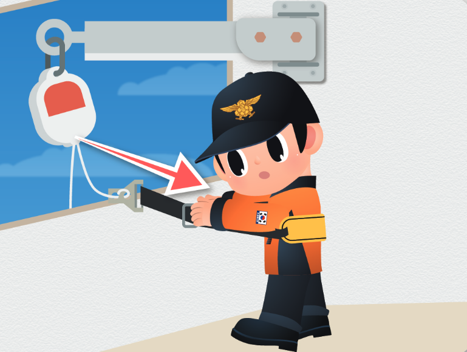
3. 안전벨트를 가슴 높이까지 착용 후 고정링을 가슴쪽으로 당기기
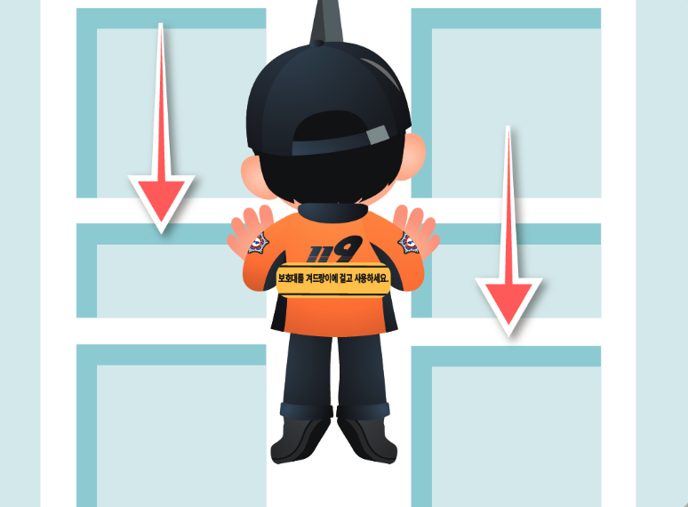
4. 벨트가 풀리지 않게 양팔을 쭉 뻗어 벽면을 짚으면서 하강
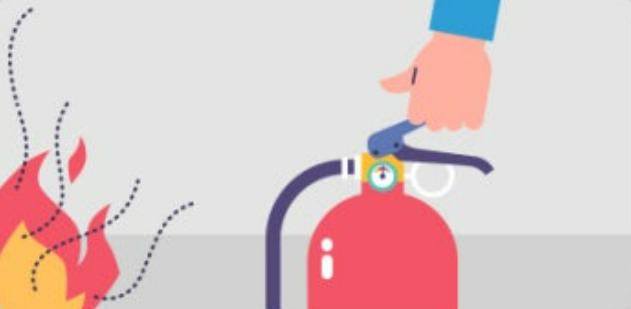
1. 소화기를 불이 난 곳으로 옮기기
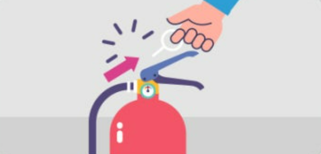
2. 바닥에 소화기를 두고 몸통을 잡은 상태에서 손잡이 부분의 안전핀 뽑기
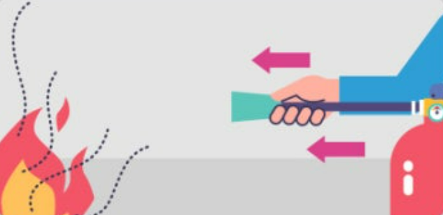
3. 바람을 등지고 서서 노즐이 불을 향하게 하기
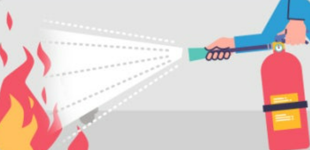
4. 손잡이를 움켜쥐고 빗자루로 쓸 듯이 분말 뿌리기
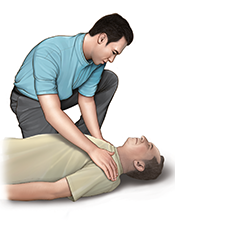
1. 어깨를 가볍게 두드리며, 큰 목소리로 "여보세요, 괜찮으세요?" 라고 물어본다.
반응이 없다면 심정지의 가능성이 높다고 판단해야 한다.
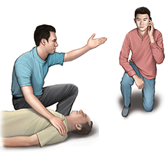
2. 변 사람에게 119 신고를 요청한다.
만약 주위에 심장충격기(자동제세동기)가 비치되어 있다면 즉시 가져와 사용해야 한다.
3. 얼굴과 가슴을 10초 이내로 관찰하여 호흡이 있는지를 확인한다.
환자의 호흡이 없거나 비정상적이라면 심정지가 발생한 것으로 판단한다.
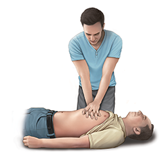
4. 환자를 바닥이 단단하고 평평한 곳에 등을 대고 눕힌 뒤에 가슴뼈(흉골)의 아래쪽 절반 부위에 깍지를 낀 두 손의 손바닥 뒤꿈치를 댄다.
분당 100~120회의 속도와 약 5cm 깊이(소아 4~5 cm)로 강하고 빠르게 시행한다.
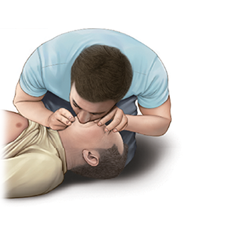
5. 환자의 머리를 젖히고, 턱을 들어 올려 환자의 기도를 개방시킨다. 머리를 젖혔던 손의 엄지와 검지로 환자의 코를 잡아서 막고, 입을 크게 벌려 환자의 입을 완전히 막은 후 가슴이 올라올 정도로 1초에 걸쳐서 숨을 불어넣는다.
환자의 가슴이 부풀어 오르는지 눈으로 확인한다.
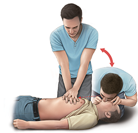
6. 이후에는 30회의 가슴압박과 2회의 인공호흡을 119 구급대원이 현장에 도착할 때까지 반복해서 시행한다.
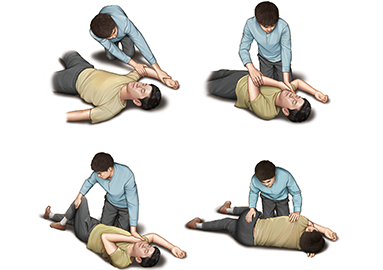
7. 행하던 중에 환자가 소리를 내거나 움직이면, 호흡도 회복되었는지 확인한다.
호흡이 회복되었다면, 환자를 옆으로 돌려 눕혀 기도(숨길)가 막히는 것을 예방한다.
 2024학년도 대전대신고 1학년 수학여행
2024학년도 대전대신고 1학년 수학여행